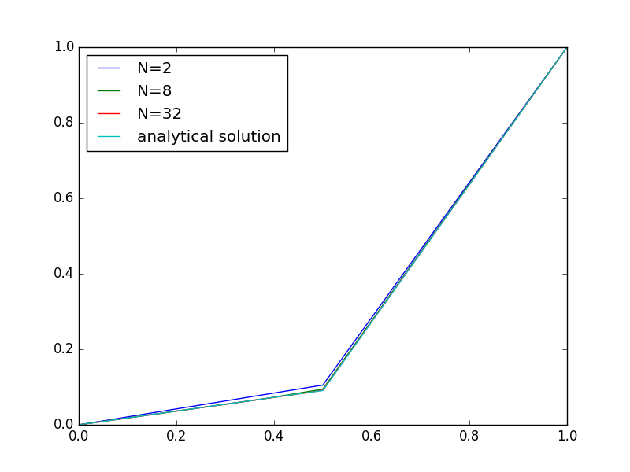

Figure 74: The solution \( w \) of (359) with \( \beta=\mu=1 \) for different mesh resolutions.

Many mathematical models involve \( m+1 \) unknown functions governed by a system of \( m+1 \) differential equations. In abstract form we may denote the unknowns by \( u^{(0)},\ldots, u^{(m)} \) and write the governing equations as $$ \begin{align*} \mathcal{L}_0(u^{(0)},\ldots,u^{(m)}) &= 0,\\ &\vdots\\ \mathcal{L}_{m}(u^{(0)},\ldots,u^{(m)}) &= 0, \end{align*} $$ where \( \mathcal{L}_i \) is some differential operator defining differential equation number \( i \).
There are basically two ways of formulating a variational form for a system of differential equations. The first method treats each equation independently as a scalar equation, while the other method views the total system as a vector equation with a vector function as unknown.
Let us start with the approach that treats one equation at a time. We multiply equation number \( i \) by some test function \( v^{(i)}\in V^{(i)} \) and integrate over the domain: $$ \begin{align} \int_\Omega \mathcal{L}^{(0)}(u^{(0)},\ldots,u^{(m)}) v^{(0)}\dx &= 0, \tag{310}\\ &\vdots \tag{311}\\ \int_\Omega \mathcal{L}^{(m)}(u^{(0)},\ldots,u^{(m)}) v^{(m)}\dx &= 0 \tag{312} \tp \end{align} $$ Terms with second-order derivatives may be integrated by parts, with Neumann conditions inserted in boundary integrals. Let $$ V^{(i)} = \hbox{span}\{\baspsi_0^{(i)},\ldots,\baspsi_{N_i}^{(i)}\},$$ such that $$ u^{(i)} = B^{(i)}(\x) + \sum_{j=0}^{N_i} c_j^{(i)} \baspsi_j^{(i)}(\x), $$ where \( B^{(i)} \) is a boundary function to handle nonzero Dirichlet conditions. Observe that different unknowns may live in different spaces with different basis functions and numbers of degrees of freedom.
From the \( m \) equations in the variational forms we can derive \( m \) coupled systems of algebraic equations for the \( \Pi_{i=0}^{m} N_i \) unknown coefficients \( c_j^{(i)} \), \( j=0,\ldots,N_i \), \( i=0,\ldots,m \).
The alternative method for deriving a variational form for a system of differential equations introduces a vector of unknown functions $$ \u = (u^{(0)},\ldots,u^{(m)}),$$ a vector of test functions $$ \v = (v^{(0)},\ldots,v^{(m)}),$$ with $$ \u, \v \in \V = V^{(0)}\times \cdots \times V^{(m)} \tp $$ With nonzero Dirichlet conditions, we have a vector \( \boldsymbol{B} = (B^{(0)},\ldots,B^{(m)}) \) with boundary functions and then it is \( \u - \boldsymbol{B} \) that lies in \( \V \), not \( \u \) itself.
The governing system of differential equations is written $$ \boldsymbol{\mathcal{L}}(\u ) = 0,$$ where $$ \boldsymbol{\mathcal{L}}(\u ) = (\mathcal{L}^{(0)}(\u),\ldots, \mathcal{L}^{(m)}(\u)) \tp $$ The variational form is derived by taking the inner product of the vector of equations and the test function vector: $$ \begin{equation} \int_\Omega \boldsymbol{\mathcal{L}}(\u )\cdot\v = 0\quad\forall\v\in\V\tp \tag{313} \end{equation} $$
Observe that (313) is one scalar equation. To derive systems of algebraic equations for the unknown coefficients in the expansions of the unknown functions, one chooses \( m \) linearly independent \( \v \) vectors to generate \( m \) independent variational forms from (313). The particular choice \( \v = (v^{(0)},0,\ldots,0) \) recovers (310), \( \v = (0,\ldots,0,v^{(m)} \) recovers (312), and \( \v = (0,\ldots,0,v^{(i)},0,\ldots,0) \) recovers the variational form number \( i \), \( \int_\Omega \mathcal{L}^{(i)} v^{(i)}\dx =0 \), in (310)-(312).
We now consider a specific system of two partial differential equations in two space dimensions: $$ \begin{align} \mu \nabla^2 w &= -\beta, \tag{314}\\ \kappa\nabla^2 T &= - \mu ||\nabla w||^2 \tp \tag{315} \end{align} $$ The unknown functions \( w(x,y) \) and \( T(x,y) \) are defined in a domain \( \Omega \), while \( \mu \), \( \beta \), and \( \kappa \) are given constants. The norm in (315) is the standard Euclidean norm: $$ ||\nabla w||^2 = \nabla w\cdot\nabla w = w_x^2 + w_y^2 \tp $$
The boundary conditions associated with (314)-(315) are \( w=0 \) on \( \partial\Omega \) and \( T=T_0 \) on \( \partial\Omega \). Each of the equations (314) and (315) needs one condition at each point on the boundary.
The system (314)-(315) arises from fluid flow in a straight pipe, with the \( z \) axis in the direction of the pipe. The domain \( \Omega \) is a cross section of the pipe, \( w \) is the velocity in the \( z \) direction, \( \mu \) is the viscosity of the fluid, \( \beta \) is the pressure gradient along the pipe, \( T \) is the temperature, and \( \kappa \) is the heat conduction coefficient of the fluid. The equation (314) comes from the Navier-Stokes equations, and (315) follows from the energy equation. The term \( - \mu ||\nabla w||^2 \) models heating of the fluid due to internal friction.
Observe that the system (314)-(315) has only a one-way coupling: \( T \) depends on \( w \), but \( w \) does not depend on \( T \), because we can solve (314) with respect to \( w \) and then (315) with respect to \( T \). Some may argue that this is not a real system of PDEs, but just two scalar PDEs. Nevertheless, the one-way coupling is convenient when comparing different variational forms and different implementations.
Let us first apply the same function space \( V \) for \( w \) and \( T \) (or more precisely, \( w\in V \) and \( T-T_0 \in V \)). With $$ V = \hbox{span}\{\baspsi_0(x,y),\ldots,\baspsi_N(x,y)\}, $$ we write $$ \begin{equation} w = \sum_{j=0}^N c^{(w)}_j \baspsi_j,\quad T = T_0 + \sum_{j=0}^N c^{(T)}_j \baspsi_j\tp \tag{316} \end{equation} $$ Note that \( w \) and \( T \) in (314)-(315) denote the exact solution of the PDEs, while \( w \) and \( T \) (316) are the discrete functions that approximate the exact solution. It should be clear from the context whether a symbol means the exact or approximate solution, but when we need both at the same time, we use a subscript e to denote the exact solution.
Inserting the expansions (316) in the governing PDEs, results in a residual in each equation, $$ \begin{align} R_w &= \mu \nabla^2 w + \beta, \tag{317}\\ R_T &= \kappa\nabla^2 T + \mu ||\nabla w||^2 \tp \tag{318} \end{align} $$ A Galerkin method demands \( R_w \) and \( R_T \) do be orthogonal to \( V \): $$ \begin{align*} \int_\Omega R_w v \dx &=0\quad\forall v\in V,\\ \int_\Omega R_T v \dx &=0\quad\forall v\in V \tp \end{align*} $$ Because of the Dirichlet conditions, \( v=0 \) on \( \partial\Omega \). We integrate the Laplace terms by parts and note that the boundary terms vanish since \( v=0 \) on \( \partial\Omega \): $$ \begin{align} \int_\Omega \mu \nabla w\cdot\nabla v \dx &= \int_\Omega \beta v\dx \quad\forall v\in V, \tag{319}\\ \int_\Omega \kappa \nabla T\cdot\nabla v \dx &= \int_\Omega \mu \nabla w\cdot\nabla w\, v\dx \quad\forall v\in V \tag{320} \tp \end{align} $$ The equation \( R_w \) in (317) is linear in \( w \), while the equation \( R_T \) in (318) is linear in \( T \) and nonlinear in \( w \).
The alternative way of deriving the variational from is to introduce a test vector function \( \v\in\V = V\times V \) and take the inner product of \( \v \) and the residuals, integrated over the domain: $$ \int_{\Omega} (R_w, R_T)\cdot\v \dx = 0\quad\forall\v\in\V \tp $$ With \( \v = (v_0,v_1) \) we get $$ \int_{\Omega} (R_w v_0 + R_T v_1) \dx = 0\quad\forall\v\in\V \tp $$ Integrating the Laplace terms by parts results in $$ \begin{equation} \int_\Omega (\mu\nabla w\cdot\nabla v_0 + \kappa\nabla T\cdot\nabla v_1)\dx = \int_\Omega (\beta v_0 + \mu\nabla w\cdot\nabla w\, v_1)\dx, \quad\forall \v\in\V \tp \tag{321} \end{equation} $$ Choosing \( v_0=v \) and \( v_1=0 \) gives the variational form (319), while \( v_0=0 \) and \( v_1=v \) gives (320).
With the inner product notation, \( (p,q) = \int_\Omega pq\dx \), we can alternatively write (319) and (320) as $$ \begin{align*} (\mu\nabla w,\nabla v) &= (\beta, v) \quad\forall v\in V,\\ (\kappa \nabla T,\nabla v) &= (\mu\nabla w\cdot\nabla w, v)\quad\forall v\in V, \end{align*} $$ or since \( \mu \) and \( \kappa \) are considered constant, $$ \begin{align} \mu (\nabla w,\nabla v) &= (\beta, v) \quad\forall v\in V, \tag{322}\\ \kappa(\nabla T,\nabla v) &= \mu(\nabla w\cdot\nabla w, v)\quad\forall v\in V \tag{323} \tp \end{align} $$ Note that the left-hand side of (322) is again linear in \( w \), the left-hand side of (323) is linear in \( T \) and the nonlinearity of \( w \) appears in the right-hand side of (323)
The linear systems governing the coefficients \( c_j^{(w)} \) and \( c_j^{(T)} \), \( j=0,\ldots,N \), are derived by inserting the expansions (316) in (319) and (320), and choosing \( v=\baspsi_i \) for \( i=0,\ldots,N \). The result becomes $$ \begin{align} \sum_{j=0}^N A^{(w)}_{i,j} c^{(w)}_j &= b_i^{(w)},\quad i=0,\ldots,N, \tag{324}\\ \sum_{j=0}^N A^{(T)}_{i,j} c^{(T)}_j &= b_i^{(T)},\quad i=0,\ldots,N, \tag{325}\\ A^{(w)}_{i,j} &= \mu(\nabla \baspsi_j,\nabla \baspsi_i), \tag{326}\\ b_i^{(w)} &= (\beta, \baspsi_i), \tag{327}\\ A^{(T)}_{i,j} &= \kappa(\nabla \baspsi_j,\nabla \baspsi_i), \tag{328}\\ b_i^{(T)} &= \mu((\sum_j c^{(w)}_j\nabla\baspsi_j)\cdot (\sum_k c^{(w)}_k\nabla\baspsi_k), \baspsi_i) \tp \tag{329} \end{align} $$
It can also be instructive to write the linear systems using matrices and vectors. Define \( K \) as the matrix corresponding to the Laplace operator \( \nabla^2 \). That is, \( K_{i,j} = (\nabla \baspsi_j,\nabla \baspsi_i) \). Let us introduce the vectors $$ \begin{align*} b^{(w)} &= (b_0^{(w)},\ldots,b_{N}^{(w)}),\\ b^{(T)} &= (b_0^{(T)},\ldots,b_{N}^{(T)}),\\ c^{(w)} &= (c_0^{(w)},\ldots,c_{N}^{(w)}),\\ c^{(T)} &= (c_0^{(T)},\ldots,c_{N}^{(T)})\tp \end{align*} $$ The system (324)-(325) can now be expressed in matrix-vector form as $$ \begin{align} \mu K c^{(w)} &= b^{(w)}, \tag{330}\\ \kappa K c^{(T)} &= b^{(T)}\tp \tag{331} \end{align} $$
We can solve the first system for \( c^{(w)} \), and then the right-hand side \( b^{(T)} \) is known such that we can solve the second system for \( c^{(T)} \). Hence, the decoupling of the unknowns \( w \) and \( T \) reduces the system of nonlinear PDEs to two linear PDEs.
Despite the fact that \( w \) can be computed first, without knowing \( T \), we shall now pretend that \( w \) and \( T \) enter a two-way coupling such that we need to derive the algebraic equations as one system for all the unknowns \( c_j^{(w)} \) and \( c_j^{(T)} \), \( j=0,\ldots,N \). This system is nonlinear in \( c_j^{(w)} \) because of the \( \nabla w\cdot\nabla w \) product. To remove this nonlinearity, imagine that we introduce an iteration method where we replace \( \nabla w\cdot\nabla w \) by \( \nabla w_{-}\cdot\nabla w \), \( w_{-} \) being the \( w \) computed in the previous iteration. Then the term \( \nabla w_{-}\cdot\nabla w \) is linear in \( w \) since \( w_{-} \) is known. The total linear system becomes $$ \begin{align} \sum_{j=0}^N A^{(w,w)}_{i,j} c^{(w)}_j + \sum_{j=0}^N A^{(w,T)}_{i,j} c^{(T)}_j &= b_i^{(w)},\quad i=0,\ldots,N, \tag{332}\\ \sum_{j=0}^N A^{(T,w)}_{i,j} c^{(w)}_j + \sum_{j=0}^N A^{(T,T)}_{i,j} c^{(T)}_j &= b_i^{(T)},\quad i=0,\ldots,N, \tag{333}\\ A^{(w,w)}_{i,j} &= \mu(\nabla \baspsi_j,\nabla \baspsi_i), \tag{334}\\ A^{(w,T)}_{i,j} &= 0, \tag{335}\\ b_i^{(w)} &= (\beta, \baspsi_i), \tag{336}\\ A^{(w,T)}_{i,j} &= \mu((\nabla w_{-})\cdot\nabla\baspsi_j), \baspsi_i), \tag{337}\\ A^{(T,T)}_{i,j} &= \kappa(\nabla \baspsi_j,\nabla \baspsi_i), \tag{338}\\ b_i^{(T)} &= 0 \tp \tag{339} \end{align} $$ This system can alternatively be written in matrix-vector form as $$ \begin{align} \mu K c^{(w)} &= b^{(w)}, \tag{340}\\ L c^{(w)} + \kappa K c^{(T)} & =0, \tag{341} \end{align} $$ with \( L \) as the matrix from the \( \nabla w_{-}\cdot\nabla \) operator: \( L_{i,j} = A^{(w,T)}_{i,j} \). The matrix \( K \) is \( K_{i,j} = A^{(w,w)}_{i,j} = A^{(T,T)}_{i,j} \).
The matrix-vector equations are often conveniently written in block form: $$ \left(\begin{array}{cc} \mu K & 0\\ L & \kappa K \end{array}\right) \left(\begin{array}{c} c^{(w)}\\ c^{(T)} \end{array}\right) = \left(\begin{array}{c} b^{(w)}\\ 0 \end{array}\right), $$
Note that in the general case where all unknowns enter all equations, we have to solve the compound system (332)-(333) since then we cannot utilize the special property that (324) does not involve \( T \) and can be solved first.
When the viscosity depends on the temperature, the \( \mu\nabla^2w \) term must be replaced by \( \nabla\cdot (\mu(T)\nabla w) \), and then \( T \) enters the equation for \( w \). Now we have a two-way coupling since both equations contain \( w \) and \( T \) and therefore must be solved simultaneously. The equation \( \nabla\cdot (\mu(T)\nabla w)=-\beta \) is nonlinear, and if some iteration procedure is invoked, where we use a previously computed \( T_{-} \) in the viscosity (\( \mu(T_{-}) \)), the coefficient is known, and the equation involves only one unknown, \( w \). In that case we are back to the one-way coupled set of PDEs.
We may also formulate our PDE system as a vector equation. To this end, we introduce the vector of unknowns \( \u = (u^{(0)},u^{(1)}) \), where \( u^{(0)}=w \) and \( u^{(1)}=T \). We then have $$ \nabla^2 \u = \left(\begin{array}{cc} -{\mu}^{-1}{\beta}\\ -{\kappa}^{-1}\mu \nabla u^{(0)}\cdot\nabla u^{(0)} \end{array}\right)\tp $$
It is easy to generalize the previous formulation to the case where \( w\in V^{(w)} \) and \( T\in V^{(T)} \), where \( V^{(w)} \) and \( V^{(T)} \) can be different spaces with different numbers of degrees of freedom. For example, we may use quadratic basis functions for \( w \) and linear for \( T \). Approximation of the unknowns by different finite element spaces is known as mixed finite element methods.
We write $$ \begin{align*} V^{(w)} &= \hbox{span}\{\baspsi_0^{(w)},\ldots,\baspsi_{N_w}^{(w)}\},\\ V^{(T)} &= \hbox{span}\{\baspsi_0^{(T)},\ldots,\baspsi_{N_T}^{(T)}\} \tp \end{align*} $$ The next step is to multiply (314) by a test function \( v^{(w)}\in V^{(w)} \) and (315) by a \( v^{(T)}\in V^{(T)} \), integrate by parts and arrive at $$ \begin{align} \int_\Omega \mu \nabla w\cdot\nabla v^{(w)} \dx &= \int_\Omega \beta v^{(w)}\dx \quad\forall v^{(w)}\in V^{(w)}, \tag{342}\\ \int_\Omega \kappa \nabla T\cdot\nabla v^{(T)} \dx &= \int_\Omega \mu \nabla w\cdot\nabla w\, v^{(T)}\dx \quad\forall v^{(T)}\in V^{(T)} \tag{343} \tp \end{align} $$
The compound scalar variational formulation applies a test vector function \( \v = (v^{(w)}, v^{(T)}) \) and reads $$ \begin{equation} \int_\Omega (\mu\nabla w\cdot\nabla v^{(w)} + \kappa\nabla T\cdot\nabla v^{(T)})\dx = \int_\Omega (\beta v^{(w)} + \mu\nabla w\cdot\nabla w\, v^{(T)})\dx, \tag{344} \end{equation} $$ valid \( \forall \v\in\V = V^{(w)}\times V^{(T)} \).
As earlier, we may decoupled the system in terms of two linear PDEs as we did with (324)-(325) or linearize the coupled system by introducing the previous iterate \( w_{-} \) as in (332)-(333). However, we need to distinguish between \( \baspsi_i^{(w)} \) and \( \baspsi_i^{(T)} \), and the range in the sums over \( j \) must match the number of degrees of freedom in the spaces \( V^{(w)} \) and \( V^{(T)} \). The formulas become $$ \begin{align} \sum_{j=0}^{N_w} A^{(w)}_{i,j} c^{(w)}_j &= b_i^{(w)},\quad i=0,\ldots,N_w, \tag{345}\\ \sum_{j=0}^{N_T} A^{(T)}_{i,j} c^{(T)}_j &= b_i^{(T)},\quad i=0,\ldots,N_T, \tag{346}\\ A^{(w)}_{i,j} &= \mu(\nabla \baspsi_j^{(w)},\nabla \baspsi_i^{(w)}), \tag{347}\\ b_i^{(w)} &= (\beta, \baspsi_i^{(w)}), \tag{348}\\ A^{(T)}_{i,j} &= \kappa(\nabla \baspsi_j^{(T)},\nabla \baspsi_i^{(T)}), \tag{349}\\ b_i^{(T)} &= \mu(\sum_{j=0}^{N_w} c^{(w)}_j\nabla\baspsi_j^{(w)})\cdot (\sum_{k=0}^{N_w} c^{(w)}_k\nabla\baspsi_k^{(w)}) , \baspsi_i^{(T)}) \tp \tag{350} \end{align} $$
In the case we formulate one compound linear system involving both \( c^{(w)}_j \), \( j=0,\ldots,N_w \), and \( c^{(T)}_j \), \( j=0,\ldots,N_T \), (332)-(333) becomes $$ \begin{align} \sum_{j=0}^{N_w} A^{(w,w)}_{i,j} c^{(w)}_j + \sum_{j=0}^{N_T} A^{(w,T)}_{i,j} c^{(T)}_j &= b_i^{(w)},\quad i=0,\ldots,N_w, \tag{351}\\ \sum_{j=0}^{N_w} A^{(T,w)}_{i,j} c^{(w)}_j + \sum_{j=0}^{N_T} A^{(T,T)}_{i,j} c^{(T)}_j &= b_i^{(T)},\quad i=0,\ldots,N_T, \tag{352}\\ A^{(w,w)}_{i,j} &= \mu(\nabla \baspsi_j^{(w)},\nabla \baspsi_i^{(w)}), \tag{353}\\ A^{(w,T)}_{i,j} &= 0, \tag{354}\\ b_i^{(w)} &= (\beta, \baspsi_i^{(w)}), \tag{355}\\ A^{(w,T)}_{i,j} &= \mu (\nabla w_{-}\cdot\nabla\baspsi_j^{(w)}), \baspsi_i^{(T)}), \tag{356}\\ A^{(T,T)}_{i,j} &= \kappa(\nabla \baspsi_j^{(T)},\nabla \baspsi_i^{(T)}), \tag{357}\\ b_i^{(T)} &= 0 \tp \tag{358} \end{align} $$ Here, we have again performed a linearization by employing a previous iterate \( w_{-} \). The corresponding block form $$ \left(\begin{array}{cc} \mu K^{(w)} & 0\\ L & \kappa K^{(T)} \end{array}\right) \left(\begin{array}{c} c^{(w)}\\ c^{(T)} \end{array}\right) = \left(\begin{array}{c} b^{(w)}\\ 0 \end{array}\right), $$ has square and rectangular block matrices: \( K^{(w)} \) is \( N_w\times N_w \), \( K^{(T)} \) is \( N_T\times N_T \), while \( L \) is \( N_T\times N_w \),
We can reduce the system (314)-(315) to one space dimension, which corresponds to flow in a channel between two flat plates. Alternatively, one may consider flow in a circular pipe, introduce cylindrical coordinates, and utilize the radial symmetry to reduce the equations to a one-dimensional problem in the radial coordinate. The former model becomes $$ \begin{align} \mu w_{xx} &= -\beta, \tag{359}\\ \kappa T_{xx} &= - \mu w_x^2, \tag{360} \end{align} $$ while the model in the radial coordinate \( r \) reads $$ \begin{align} \mu\frac{1}{r}\frac{d}{dr}\left( r\frac{dw}{dr}\right) &= -\beta, \tag{361}\\ \kappa \frac{1}{r}\frac{d}{dr}\left( r\frac{dT}{dr}\right) &= - \mu \left( \frac{dw}{dr}\right)^2 \tp \tag{362} \end{align} $$
The domain for (359)-(360) is \( \Omega = [0,H] \), with boundary conditions \( w(0)=w(H)=0 \) and \( T(0)=T(H)=T_0 \). For (361)-(362) the domain is \( [0,R] \) (\( R \) being the radius of the pipe) and the boundary conditions are \( du/dr = dT/dr =0 \) for \( r=0 \), \( u(R)=0 \), and \( T(R)=T_0 \).
The exact solutions, \( w_e \) and \( T_e \), to (359)
and (360) are computed
as
$$
\begin{align*}
w_{e,x} &= - \int \frac{\beta}{\mu} \dx + C_w, \\
w_e &= \int w_x \dx + D_w, \\
T_{e,x} &= - \int \mu w_x^2 \dx + C_T,\\
w_e &= \int w_x \dx + D_T, \\
\end{align*}
$$
where we determine the constants \( C_w \), \( D_w \), \( C_T \), and \( D_T \)
by the boundary conditions \( w(0)=w(H)=0 \) and
\( T(0)=T(H)=T_0 \). The calculations
may be performed in sympy as
import sympy as sym
x, mu, beta, k, H, C, D, T0 = sym.symbols("x mu beta k H C D T0")
wx = sym.integrate(-beta/mu, (x, 0, x)) + C
w = sym.integrate(wx, x) + D
s = sym.solve([w.subs(x, 0)-0, # x=0 condition
w.subs(x,H)-0], # x=H condition
[C, D]) # unknowns
w = w.subs(C, s[C]).subs(D, s[D])
w = sym.simplify(sym.expand(w))
Tx = sym.integrate(-mu*sym.diff(w,x)**2, x) + C
T = sym.integrate(Tx, x) + D
s = sym.solve([T.subs(x, 0)-T0, # x=0 condition
T.subs(x, H)-T0], # x=H condition
[C, D]) # unknowns
T = T.subs(C, s[C]).subs(D, s[D])
T = sym.simplify(sym.expand(T))
The figure 74 shows \( w \) computed by the finite element method using the decoupled approach with P1 elements, that is; implementing (324). The analytical solution \( w_e \) is a quadratic polynomial. The linear finite elements result in a poor approximation on the coarse meshes, \( N=2 \) and \( N=4 \), but the approximation improves fast and already at \( N=8 \) the approximation appears adequate. The figure 74 shows the approximation of \( T \) and also here we see that the fourth order polynomial is poorly approximated at coarse resolution, but that the approximation quickly improves.
Figure 74: The solution \( w \) of (359) with \( \beta=\mu=1 \) for different mesh resolutions.
The figure 74 shows \( T \) for different resolutions. The same tendency is apparent although the coarse grid solutions are worse for \( T \) than for \( w \). The solutions at \( N=16 \) and \( N=32 \), however, appear almost identical.
Figure 75: The solution \( T \) of (360) for \( \kappa=H=1 \).

def boundary(x):
return x[0] < DOLFIN_EPS or x[0] > 1.0 - DOLFIN_EPS
from dolfin import *
import matplotlib.pyplot as plt
Ns = [2, 4, 8, 16, 32]
for N in Ns:
mesh = UnitIntervalMesh(N)
V = FunctionSpace(mesh, "Lagrange", 1)
u = TrialFunction(V)
v = TestFunction(V)
beta = Constant(1)
mu = Constant(1)
bc = DirichletBC(V, Constant(0), boundary)
a = mu*inner(grad(u), grad(v))*dx
L = -beta*v*dx
w = Function(V)
solve(a == L, w, bc)
T0 = Constant(1)
kappa = Constant(1)
bc = DirichletBC(V, T0, boundary)
a = kappa*inner(grad(u), grad(v))*dx
L = -mu*inner(grad(w), grad(w))*v*dx
T = Function(V)
solve(a == L, T, bc)
plt.plot(V.dofmap().tabulate_all_coordinates(mesh), T.vector().array())
plt.hold(True)
plt.legend(["N=%d"%N for N in Ns], loc="upper left")
plt.show()
Most of the FEniCS code should be familiar to the reader, but
we remark that we use the function V.dofmap().tabulate_all_coordinates(mesh) to obtain the coordinates of the nodal points. This is a general
function that works for any finite element implemented in
FEniCS and also in a parallel setting.
(kam 24: do not need extensive description as it should be covered elsewhere)
The calculations for (361)
and (362) are similar.
The sympy code
import sympy as sym
r, R = sym.symbols("r R")
rwr = sym.integrate(-(beta/mu)*r, r) + C
w = sym.integrate(rwr/r, r) + D
s = sym.solve([sym.diff(w,r).subs(r, 0)-0, # r=0 condition
w.subs(r,R)-0], # r=R condition
[C, D]) # unknowns
w = w.subs(C, s[C]).subs(D, s[D])
w = sym.simplify(sym.expand(w))
rTr = sym.integrate(-mu*sym.diff(w,r)**2*r, r) + C
T = sym.integrate(rTr/r, r) + D
s = sym.solve([sym.diff(T,r).subs(r, 0)-T0, # r=0 condition
T.subs(r, R)-T0], # r=R condition
[C, D]) # unknowns
T = T.subs(C, s[C]).subs(D, s[D])
T = sym.simplify(sym.expand(T))
(kam 25: so how do we do we conclude this? FEniCS simulation in 3D or FEniCS simulation in 1D with r? Or perhaps both? There are some stuff happening with piecewise integration in the presence of the r.)
Hand-calculations do however show that we may be able to compute the solution. Integrating (363) yields the expression $$ -(a u') = C $$ A trick now is to divide by \( a(x) \) on both sides to obtain $$ - u' = \frac{C}{a} $$ and hence $$ \begin{equation} \tag{366} u(x) = \frac{C}{a(x)} x + D \end{equation} $$ The boundary conditions demand that \( u(0) = 0 \), which means that \( D=0 \) and \( u(1) = 1 \) fixate \( C \) to be \( a(1) = a_0 \).
To obtain a variational form of this problem suitable for finite element simulation, we transform the problem to a homogeneous Dirichlet problem. Let the solution be \( u(x) = B(x) + \sum_{j\in\If} c_j\baspsi_j(x) \) where \( B(x)=x \).
(kam 26: the right hand side is hard to compute. Perhaps find a problem with homogeneous BC. Or perhaps just comment that we take the linear algebra approach. Can take the opportunity to say that the BC trick requires extra regularity and that we instead do the LA approach.)
The variational problem derived from a standard Galerkin method reads: Find \( u \) such that $$ \int_{\Omega} a u' v' \, dx = \int_\Omega f v dx $$
We observe that in the variational problem, the discontinuity of \( a \) does not cause any problem as the differentiation is moved from \( a \) (and \( u' \)) to \( v \) by using integration by parts. Letting \( u=\sum_{j\in\If} c_j\baspsi_j(x) \) and \( v=\baspsi_i(x) \) the corresponding linear system is \( \sum_j A_{i,j}c_j=b_i \) with $$ \begin{align*} A_{i,j} &= (a \baspsi_j', \baspsi_i') = \int_{\Omega} a(x) \baspsi_j'(x) \baspsi_i'(x)\dx,\\ b_i &= (f,\baspsi_i)= 0 \tp \end{align*} $$
The solution of the problem is shown in Figure 76 at different mesh resolutions. The analytical solution in (366) is a piecewise polynomial, linear for \( x \) in \( [0,\half) \) and \( (\half,1] \) and it seems that the numerical strategy gives a good approximation of the solution.
The flux \( a u' \) is often a quantity of interest. Because the flux involves differentiation with respect to \( x \) we do not have an direct access to it and have to compute it. A natural approach is to take the Galerkin approximation, that is we seek a \( w \approx a u' \) on the form \( w=\sum_{j\in\If} d_j\baspsi_j \) and require Galerkin orthogonality. In other words, we require that \( w-a u' \) is orthogonal to \( \{\baspsi_i\} \). This is done by solving the linear system \( \sum_j M_{i,j}d_j=b_i \) with $$ \begin{align*} M_{i,j} &= (a \baspsi_j, \baspsi_i) = \int_{\Omega} a(x) \baspsi_j(x) \baspsi_i(x)\dx,\\ b_i &= (a u',\baspsi_i)= \int_\Omega a(x) \sum_j c_j\baspsi_j'(x) \dx\tp \end{align*} $$
As shown in Figure 77, this approach does not produce a good approximation of the flux.
Figure 76: Solution of the Darcy problem with discontinuous coefficient for different number of elements \( N \).

To improve the approximation of the flux, it is common to consider an equivalent form of (363) where the flux is one of the unknowns. The equations reads: $$ \begin{align} \frac{\partial w}{\partial x} &= 0, \tag{367}\\ w &=-a\frac{\partial u}{\partial x} \tag{368} \tp \end{align} $$ A straightforward calculation shows that inserting (368) into (367) yields the equation (363). We also note that we have replaced the second order differential equation with a system of two first order differential equations.
It is common to swap the order of the equations and also divide equation (368) by \( a \) in order to get a symmetric system of equations. Then variational formulation of the problem, having the two unknowns \( w \) and \( u \) and corresponding test functions \( v^{(w)} \) and \( v^{(u)} \), becomes $$ \begin{align} \tag{369} \int_\Omega \frac{1}{a} w v^{(w)} + \frac{\partial u}{\partial x} v^{(w)} \dx &=0, \\ \tag{370} \int_\Omega \frac{\partial w}{\partial x} v^{(u)} \dx &= 0\tp \end{align} $$ and letting \( u=\sum_{j\in\If} c_j\baspsi_j^{(u)} \), \( w=\sum_{j\in\If} c_j\baspsi_j^{(w)} \), \( v^{(u)} = \baspsi_i^{(u)} \), and \( v^{(w)} = \baspsi_i^{(w)} \), we obtain the following system of linear equations $$ A\, c = \left[ \begin{array}{cc} A^{(w,w)} & A^{(w,u)}\\ A^{(u,w)} & 0 \end{array} \right] \left[ \begin{array}{c} c^{(w)} \\ c^{(u)} \end{array} \right] = \left[ \begin{array}{c} b^{(w)} \\ b^{(u)} \end{array} \right] = b, $$ where $$ \begin{align*} A^{(w,w)}_{i,j} &= \int_{\Omega} \frac{1}{a(x)} \baspsi^{(w)}_j(x) \baspsi^{(w)}_i(x)\dx & i,j = 0\ldots N^{(w)}-1, \\ A^{(w,u)}_{i,j} &= \int_{\Omega} \frac{\partial}{\partial x} \baspsi^{(u)}_j(x) \baspsi^{(w)}_i(x)\dx & i=0\ldots N^{(w)}-1, j=0, \ldots N^{(u)}-1, \\ A^{(u,w)}_{i,j} &= A^{(w,u)}_{j,i}, \\ b^{(w)}_i &= (0,\baspsi^{(w)}_i)= 0, \\ b^{(u)}_i &= (0,\baspsi^{(u)}_i)= 0 \tp \end{align*} $$
It is interesting to note that the standard Galerkin formulation of the problem results in a perfect approximation of \( u \), while the flux \( -a u' \) is badly represented. On the other hand, for the mixed formulation, the flux is well approximated but \( u \) is approximated only to first order yielding a staircase approximation. These observations naturally suggest that we should employ P1 approximation of both \( u \) and its flux. We should then get a perfect approximation of both unknowns. This is however not possible. The linear system we obtain with P1 elements for both variables is singular.
This example shows that when we are solving systems of PDEs with several unknowns, we can not choose the approximation arbitrary. The polynomial spaces of the different unknowns have to be compatible and the accuracy of the different unknowns depend on each other. We will not discuss the reasons for the need of compatibility here as it is rather mathematical and well presented in many books, e.g. [3] [4] [10].
Figure 77: The corresponding flux \( a u' \) for the Darcy problem with discontinuous coefficient for different number of elements \( N \).

(kam 27: Not sure why the I don't get \( a_0 \). Need to debug.) (kam 28: integration by parts done above, but not commented. Also bc, not considered.) (kam 29: wrong figure)
Consider the 1D Example of the fluid flow in a straight pipe coupled to heat conduction in the section Computations in 1D. The example demonstrated fast convergence when using linear elements for both variables \( w \) and \( T \). In this exercise we quantify the order of convergence. That is, we expect that $$ \begin{align*} \|w - w_e \|_{L_2} &\le C_w h^{\beta_w}, \\ \|T - T_e \|_{L_2} &\le C_T h^{\beta_T}, \end{align*} $$ for some \( C_w \), \( C_T \), \( \beta_w \) and \( \beta_T \). Assume therefore that $$ \begin{align*} \|w - w_e \|_{L_2} &= C_w h^{\beta_w},\\ \|T - T_e \|_{L_2} &= C_T h^{\beta_T}, \end{align*} $$ and estimate \( C_w \), \( C_T \), \( \beta_w \) and \( \beta_T \).
Repeat Problem 39: Estimate order of convergence for the Cooling law with quadratic finite elements for both \( w \) and \( T \).
Calculations to be continued...
One quickly gets the impression that variational forms can handle only two types of boundary conditions: essential conditions where the unknown is prescribed, and natural conditions where flux terms integrated by parts allow specification of flux conditions. However, it is possible to treat much more general boundary conditions by adding their weak form. That is, one simply adds the variational formulation of some boundary condition \( \mathcal{B}(u)=0 \): \( \int_{\Omega_B}\mathcal{B}(u)v\dx \), where \( \Omega_B \) is some boundary, to the variational formulation of the PDE problem. Or using the terminology from the chapter Function approximation by global functions: the residual of the boundary condition when the discrete solution is inserted is added to the residual of the entire problem. The present chapter shows underlying mathematical details.
\newcommand{\uN}{u_N} Suppose we have a function $$ f(x,y) = x^2 + y^2 \tp$$ and want to optimize its values, i.e., find minima and maxima. The condition for an optimum is that the derivatives vanish in all directions, which implies $$ \boldsymbol{n}\cdot\nabla f = 0\quad\forall\boldsymbol{n} \in \Real^2,$$ which further implies $$ \frac{\partial f}{\partial x} = 0,\quad \frac{\partial f}{\partial y} = 0\tp $$ These two equations are in general nonlinear and can have many solutions, one unique solution, or none. In our specific example, there is only one solution: \( x=0 \), \( y=0 \).
Now we want to optimize \( f(x,y) \) under the constraint \( y=2-x \). This means that only \( f \) values along the line \( y=2-x \) are relevant, and we can imagine we view \( f(x,y) \) along this line and want to find the optimum value.
Our \( f \) is obviously a function of one variable along the line. Inserting \( y=2-x \) in \( f(x,y) \) eliminates \( y \) and leads to \( f \) as function of \( x \) alone: $$ f(x,y=2-x) = 4 - 4x + 2x^2\tp$$ The condition for an optimum is $$ \frac{d}{dx}(4 - 4x + 2x^2) = -4 + 4x = 0,$$ so \( x=1 \) and \( y=2-x=1 \).
In the general case we have a scalar function \( f(\x) \), \( \x=(x_0,\ldots,x_m) \) with \( n+1 \) constraints \( g_i(\x)=0 \), \( i=0,\ldots,n \). In theory, we could use the constraints to express \( n+1 \) variables in terms of the remaining \( m-n \) variables, but this is very seldom possible, because it requires us to solve the \( g_i=0 \) symbolically with respect to \( n+1 \) different variables.
When we cannot easily eliminate variables using the constraint(s), the Lagrange multiplier method come to aid. Optimization of \( f(x,y) \) under the constraint \( g(x,y)=0 \) then consists in formulating the Lagrangian $$ \ell(x,y,\lambda) = f(x,y) + \lambda g(x,y),$$ where \( \lambda \) is the Lagrange multiplier, which is unknown. The conditions for an optimum is that $$ \frac{\partial\ell}{\partial x}=0,\quad \frac{\partial\ell}{\partial y}=0,\quad \frac{\partial\ell}{\partial \lambda}=0\tp$$ In our example, we have $$ \ell(x,y,\lambda) = x^2 + y^2 + \lambda(y - 2 + x),$$ leading to the conditions $$ 2x + \lambda = 0,\quad 2y + \lambda = 0,\quad y - 2+ x = 0\tp$$ This is a system of three linear equations in three unknowns with the solution $$ x = 1,\quad y = 1,\quad \lambda =2\tp$$
In the general case with optimizing \( f(\x) \) subject to the constraints \( g_i(\x)=0 \), \( i=0,\ldots,n \), the Lagrangian becomes $$ \ell(\x,\boldsymbol{\lambda}) = f(\x) + \sum_{j=0}^n\lambda_jg_j(\x),$$ with \( \x=(x_0,\ldots,x_m) \) and \( \boldsymbol{\lambda}=(\lambda_0,\ldots,\lambda_n) \). The conditions for an optimum are $$ \frac{\partial f}{\partial\x}=0,\quad \frac{\partial f}{\partial\boldsymbol{\lambda}}=0\tp,$$ where $$ \frac{\partial f}{\partial\x}=0\Rightarrow \frac{\partial f}{\partial x_i}=0,\ i=0,\ldots,m\tp$$ Similarly, \( \partial f/\partial\boldsymbol{\lambda}=0 \) leads to \( n+1 \) equations \( \partial f/\partial\lambda_i=0 \), \( i=0,\ldots,n \).
Instead of incorporating the constraint exactly, as in the Lagrange multiplier method, the penalty method employs an approximation at the benefit of avoiding the extra Lagrange multiplier as unknown. The idea is to add the constraint squared, multiplied by a large prescribed number \( \lambda \), called the penalty parameter, $$ \ell_\lambda (x,y) = f(x,y) + \frac{1}{2}\lambda(y-2+x)^2\tp$$ Note that \( \lambda \) is now a given (chosen) number. The \( \ell_\lambda \) function is just a function of two variables, so the optimum is found by solving $$ \frac{\partial \ell_\lambda}{\partial x} =0,\quad \frac{\partial \ell_\lambda}{\partial y} =0\tp$$ Here we get $$ 2x +\lambda (y-2+x)=0,\quad 2y + \lambda (y-2+x)=0\tp$$ The solution becomes $$ x = y = \frac{1}{1-\frac{1}{2}\lambda^{-1}},$$ which we see approaches the correct solution \( x=y=1 \) as \( \lambda\rightarrow\infty \).
The penalty method for optimization of a multi-variate function \( f(\x) \) with constraints \( g_i(\x)=0 \), \( i=0,\ldots,n \), can be formulated as optimization of the unconstrained function $$ \ell_\lambda(\x) = f(\x) + \frac{1}{2}\lambda\sum_{j=0}^n (g_i(\x))^2\tp$$ Sometimes the symbol \( \epsilon^{-1} \) is used for \( \lambda \) in the penalty method.
The methods above for optimization of scalar functions of a finite number of variables can be generalized to optimization of functionals (functions of functions). We start with the specific example of optimizing $$ \begin{equation} F(u) = \int\limits_\Omega ||\nabla u||^2 \dx - \int\limits_\Omega fu \dx - \int\limits_{\partial\Omega_N}gu \ds,\quad u\in V, \tag{371} \end{equation} $$ where \( \Omega\subset \Real^2 \), and \( u \) and \( f \) are functions of \( x \) and \( y \) in \( \Omega \). The norm \( ||\nabla u||^2 \) is defined as \( u_{x}^2 + u_{y}^2 \), with \( u_x \) denoting the derivative with respect to \( x \). The vector space \( V \) contains the relevant functions for this problem, and more specifically, \( V \) is the Hilbert space \( H^1_0 \) consisting of all functions for which \( \int\limits_\Omega (u^2 + ||\nabla u||^2)\dx \) is finite and \( u=0 \) on \( \partial\Omega_D \), which is some part of the boundary \( \partial\Omega \) of \( \Omega \). The remaining part of the boundary is denoted by \( \partial\Omega_N \) (\( \partial\Omega_N\cup\partial\Omega_D=\partial\Omega \), \( \partial\Omega_N\cap\partial\Omega_D=\emptyset \)), over which \( F(u) \) involves a line integral. Note that \( F \) is a mapping from any \( u\in V \) to a real number in \( \Real \).
Optimization of the functional \( F \) makes use of the machinery from variational calculus. The essence is to demand that the functional derivative of \( F \) with respect to \( u \) is zero. Technically, this is carried out by writing a general function \( \tilde u\in V \) as \( \tilde u=u+\epsilon v \), where \( u \) is the exact solution of the optimization problem, \( v \) is an arbitrary function in \( V \), and \( \epsilon \) is a scalar parameter. The functional derivative in the direction of \( v \) (also known as the Gateaux derivative) is defined as $$ \begin{equation} \frac{\delta F}{\delta u} = \lim_{\epsilon\rightarrow 0}\frac{d}{d\epsilon} F(u+\epsilon v) \tp \tag{372} \end{equation} $$
As an example, the functional derivative to the term \( \int\limits_\Omega fu\dx \) in \( F(u) \) is computed by finding $$ \begin{equation} \frac{d}{d\epsilon} \int\limits_\Omega f\cdot(u+\epsilon v)\dx = \int\limits_\Omega fv \dx, \tag{373} \end{equation} $$ and then let \( \epsilon \) go to zero, which just results in \( \int\limits_\Omega fv\dx \). The functional derivative of the other area integral becomes $$ \frac{d}{d\epsilon} \int\limits_\Omega ((u_x + \epsilon v_x)^2 + (u_y + \epsilon v_y)^2)\dx = \int\limits_\Omega (2(u_x + \epsilon v_x)v_x + 2(u_v+\epsilon v_y)v_y)\dx, $$ which leads to $$ \begin{equation} \int\limits_\Omega (u_xv_x + u_yv_y)\dx = \int\limits_\Omega \nabla u\cdot\nabla v \dx, \tag{374} \end{equation} $$ as \( \epsilon\rightarrow 0 \).
The functional derivative of the boundary term becomes $$ \begin{equation} \frac{d}{d\epsilon} \int\limits_{\partial\Omega_N} g \cdot (u+\epsilon v) \ds = \int\limits_{\partial\Omega_N} g v \ds, \tag{375} \end{equation} $$ for any \( \epsilon \). From (373)-(375) we then get the result $$ \begin{equation} \frac{\delta F}{\delta u} = \int\limits_\Omega \nabla u\cdot\nabla v \dx - \int\limits_\Omega fv \dx - \int\limits_{\partial\Omega_N} g v \ds =0\tp \tag{376} \end{equation} $$ Since \( v \) is arbitrary, this equation must hold \( \forall v\in V \). Many will recognize (376) as the variational formulation of a Poisson problem, which can be directly discretized and solved by a finite element method.
Variational calculus goes one more step and derives a partial differential equation problem from (376), known as the Euler-Lagrange equation corresponding to optimization of \( F(u) \). To find the differential equation, one manipulates the variational form (376) such that no derivatives of \( v \) appear and the equation (376) can be written as \( \int\limits_\Omega \mathcal{L}v\dx =0 \), \( \forall v\in \), from which it follows that \( \mathcal{L}=0 \) is the differential equation.
Performing integration by parts of the term \( \int\limits_\Omega\nabla u\cdot\nabla v \dx \) in (376) moves the derivatives of \( v \) over to \( u \): $$ \begin{align*} \int\limits_\Omega\nabla u\cdot\nabla v \dx &= -\int\limits_\Omega (\nabla^2 u)v\dx + \int\limits_{\partial\Omega}\frac{\partial u}{\partial n}v \ds\\ & = -\int\limits_\Omega (\nabla^2 u)v\dx + \int\limits_{\partial\Omega_D}\frac{\partial u}{\partial n}v \ds + \int\limits_{\partial\Omega_N}\frac{\partial u}{\partial n}v \ds\\ & = -\int\limits_\Omega (\nabla^2 u)v\dx + \int\limits_{\partial\Omega_D}\frac{\partial u}{\partial n}0 \ds + \int\limits_{\partial\Omega_N}\frac{\partial u}{\partial n}v \ds\\ & = -\int\limits_\Omega (\nabla^2 u)v\dx + \int\limits_{\partial\Omega_N}\frac{\partial u}{\partial n}v \ds\tp \end{align*} $$ Using this rewrite in (376) gives $$ -\int\limits_\Omega (\nabla^2 u)v\dx + \int\limits_{\partial\Omega_N}\frac{\partial u}{\partial n}v \ds -\int\limits_\Omega fv\dx -\int\limits_{\partial\Omega_N} g v \ds, $$ which equals $$\int\limits_\Omega (\nabla^2 u + f)v\dx + \int\limits_{\partial\Omega_N}\left(\frac{\partial u}{\partial n}-g\right)v \ds =0\tp $$ This is to hold for any \( v\in V \), which means that the integrands must vanish, and we get the famous Poisson problem $$ \begin{align*} -\nabla^2u &= f,\quad (x,y)\in\Omega,\\ u &=0,\quad (x,y)\in\partial\Omega_D,\\ \frac{\partial u}{\partial n} &=g,\quad (x,y)\in\partial\Omega_N\tp \end{align*} $$
The attention is now on optimization of a functional \( F(u) \) with a given constraint that \( u=\uN \) on \( \partial\Omega_N \). We could, of course, just extend the Dirichlet condition on \( u \) in the previous set-up by saying that \( \partial\Omega_D \) is the complete boundary \( \partial\Omega \) and that \( u \) takes on the values of \( 0 \) and \( \uN \) at the different parts of the boundary. However, this also implies that all the functions in \( V \) must vanish on the entire boundary. We want to relax this condition (and by relaxing it, we will derive a method that can be used for many other types of boundary conditions!). The goal is, therefore, to incorporate \( u=\uN \) on \( \partial\Omega_N \) without demanding anything from the functions in \( V \). We can achieve this by enforcing the constraint $$ \begin{equation} \int\limits_{\partial\Omega_N} |u-\uN| \ds = 0\tp \tag{377} \end{equation} $$ However, this constraint is cumbersome to implement. Note that the absolute sign here is needed as in general there are many functions \( u \) such that \( \int\limits_{\partial\Omega_N} u-\uN \ds = 0 \).
A penalty method. The idea is to add a penalization term \( \frac{1}{2}\lambda(u-\uN)^2 \), integrated over the boundary \( \partial\Omega_N \), to the functional \( F(u) \), just as we do in the penalty method (the factor \( \frac{1}{2} \) can be incorporated in \( \lambda \), but makes the final result look nicer). The condition \( \partial u/\partial n=g \) on \( \partial\Omega_N \) is no longer relevant, so we replace the \( g \) by the unknown \( \partial u/\partial n \) in the boundary integral term in (371). The new functional becomes
(kam 30: there is a mismatch between text and equations here. If we replace \( g \) with \( \partial u/\partial n \) it seems we get a symmetric form right away as we get \( u \partial u/\partial n \).) $$ \begin{equation} F(u) = \int\limits_\Omega ||\nabla u||^2 \dx - \int\limits_\Omega fu \dx - \int\limits_{\partial\Omega_N} \frac{\partial u}{\partial n} u \ds + \, \frac{1}{2}\int\limits_{\partial\Omega_N}\lambda (u-\uN)^2 \ds,\quad u\in V, \tag{378} \end{equation} $$ In \( F(\tilde u) \), insert \( \tilde u=u+\epsilon v \), differentiate with respect to \( \epsilon \), and let \( \epsilon\rightarrow 0 \). The result becomes $$ \begin{equation} \frac{\delta F}{\delta u} = \int\limits_\Omega \nabla u\cdot\nabla v \dx - \int\limits_\Omega fv \dx - \int\limits_{\partial\Omega_N}\frac{\partial u}{\partial n}v \ds + \int\limits_{\partial\Omega_N}\lambda (u-\uN)v \ds =0\tp \tag{379} \end{equation} $$
We can drop the essential condition \( u=0 \) on \( \partial\Omega_E \) and just use the method above to enforce \( u=\uN \) on the entire boundary \( \partial\Omega \).
Symmetrization. Using the formulation (379) for finite element computations has one disadvantage: the variational form is no longer symmetric, and the coefficient matrix in the associated linear system becomes non-symmetric. We see this if we rewrite (379) as $$ a(u,v) = L(v),\quad\forall v\in V,$$ with $$ \begin{align*} a(u,v) &= \int\limits_\Omega \nabla u\cdot\nabla v \dx -\int\limits_{\partial\Omega_N}\frac{\partial u}{\partial n}v \ds + \int\limits_{\partial\Omega_N}\lambda uv \ds,\\ L(v) &= \int\limits_\Omega fv \dx + \int\limits_{\partial\Omega_N}\lambda \uN v \ds \tp \end{align*} $$ The lack of symmetry is evident in that we cannot interchange \( u \) and \( v \) in \( a(u,v) \), that is; \( a(u,v)\not=a(v,u) \). The standard finite element method results in a symmetric bilinear form and a corresponding matrix for the Poisson problem and we would like to regain this property. The problematic non-symmetric term is the line integral of \( v \partial u/\partial n \). If we had another term \( u \partial v/\partial n \), the sum would be symmetric. The idea is therefore to subtract \( \int_{\partial\Omega_N} u \partial v/\partial n\ds \) from both \( a(u,v) \) and \( L(v) \). Since \( u=\uN \) on \( \partial\Omega_N \) we subtract \( \int_{\partial\Omega_N} u\partial v/\partial n\ds = \int_{\partial\Omega_N} \uN\partial v/\partial n\ds \) in \( L(v) \): $$ \begin{align*} a(u,v) &= \int\limits_\Omega \nabla u\cdot\nabla v \dx -\int\limits_{\partial\Omega_N}\frac{\partial u}{\partial n}v \ds - \int\limits_{\partial\Omega_N}\frac{\partial v}{\partial n}u \ds + \int\limits_{\partial\Omega_N}\lambda uv \ds,\\ L(v) &= \int\limits_\Omega fv \dx - \int\limits_{\partial\Omega_N}\frac{\partial v}{\partial n}\uN \ds + \int\limits_{\partial\Omega_N}\lambda \uN v \ds \tp \end{align*} $$ This formulation is known as Nitsche's method, but it is actually a standard penalty method.
We can also easily derive this formulation from the partial differential equation problem. We multiply \( -\nabla^2 u=f \) by \( v \) and integrate over \( \Omega \). Integration by parts leads to $$ \int\limits_\Omega (\nabla^2 u)v\dx = -\int\limits_\Omega \nabla u\cdot \nabla v\dx + \int\limits_{\partial\Omega} \frac{\partial u}{\partial n}v\ds\tp $$ Now, \( u=0 \) and therefore \( v=0 \) on \( \partial\Omega_D \) so the line integral reduces to an integral over \( \partial\Omega_N \), where we have no condition and hence no value for \( \partial u/\partial n \), so we leave the integral as is. Then we add the boundary penalization term \( \lambda\int_{\partial\Omega_N} (u-\uN)v\ds \). The result becomes identical to (379). We can thereafter add the symmetrization terms if desired.
We consider the same problem as in the section Penalty method for optimization with constraints, but this time we want to apply a Lagrange multiplier method so we can solve for a multiplier function rather than specifying a large number for a penalty parameter and getting an approximate result.
The functional to be optimized reads $$ F(u) = \int\limits_\Omega ||\nabla u||^2 \dx - \int\limits_\Omega fu \dx - \int\limits_{\partial\Omega_N}\uN \ds + \int\limits_{\partial\Omega_N}\lambda(u-\uN)\ds,\quad u\in V\tp $$ Here we have two unknown functions: \( u\in V \) in \( \Omega \) and \( \lambda\in Q \) on \( \partial\Omega_N \). The optimization criteria are $$ \frac{\delta F}{\delta u} = 0,\quad\frac{\delta F}{\delta\lambda} = 0\tp$$ We write \( \tilde u = u + \epsilon_u v \) and \( \tilde\lambda = \lambda + \epsilon_\lambda p \), where \( v \) is an arbitrary function in \( V \) and \( p \) is an arbitrary function in \( Q \). Notice that \( V \) is here a usual function space with functions defined on \( \Omega \), while on the other hand is a function space defined only on the surface \( \Omega_N \). We insert the expressions for \( \tilde u \) and \( \tilde\lambda \) for \( u \) and \( \lambda \) and compute $$ \begin{align*} \frac{\delta F}{\delta u} &= \lim_{\epsilon_u\rightarrow 0}\frac{dF}{d\epsilon_u} = \int\limits_{\Omega}\nabla u\cdot\nabla v\dx - \int\limits_\Omega fv \dx - \int\limits_{\partial\Omega_N}\frac{\partial u}{\partial n}v\ds + \int\limits_{\partial\Omega_N}\lambda(u-\uN)\ds = 0,\\ \frac{\delta F}{\delta \lambda} &= \lim_{\epsilon_\lambda\rightarrow 0}\frac{dF}{d\epsilon_\lambda} = \int\limits_{\partial\Omega_N} (u-\uN) p\ds = 0 \tp \end{align*} $$
These equations can be written as a linear system of equations: Find \( u, \lambda \in V\times Q \) such that $$ \begin{align*} a(u,v) + b(\lambda, v) &= L(v), \\ b(u, p) &= 0, \end{align*} $$ for all test functions \( v\in V \) and \( p \in Q \) and $$ \begin{align*} a(u,v) &= \int\limits_{\Omega}\nabla u\cdot\nabla v\dx - \int\limits_{\partial\Omega_N}\frac{\partial u}{\partial n}v\ds, \\ b(\lambda, v) &= \int\limits_\Omega \lambda v \ds, \\ L(v) &= \int\limits_\Omega fv \dx, \\ L(\lambda) &= \int\limits_\Omega \uN \lambda \ds . \end{align*} $$
Letting \( u=\sum_{j\in\If} c_j\baspsi^{(u)}_j \), \( \lambda=\sum_{j\in\If} c_j\baspsi^{(\lambda)}_j \), \( v = \baspsi^{(v)}_i \), and \( p = \baspsi^{(p)}_i \), we obtain the following system of linear equations $$ A\, c = \left[ \begin{array}{cc} A^{(u,u)} & A^{(\lambda,u)}\\ A^{(u,\lambda)} & 0 \end{array} \right] \left[ \begin{array}{c} c^{(u)} \\ c^{(\lambda)} \end{array} \right] = \left[ \begin{array}{c} b^{(u)} \\ b^{(\lambda)} \end{array} \right] = b, $$ where $$ \begin{align*} A^{(u,u)}_{i,j} &= a(\baspsi^{(w)}_j, \baspsi^{(w)}_i), \\ A^{(u,\lambda)}_{i,j} &= b(\baspsi^{(u)}_j, \baspsi^{(w)}_i), \\ A^{(\lambda,u)}_{i,j} &= A^{(u,\lambda)}_{j,i}, \\ b^{(w)}_i &= (f,\baspsi^{(w)}_i), \\ b^{(u)}_i &= 0 \tp \end{align*} $$
(kam 31: \( a \) should be symmetric. Check why not. Also here \( \partial \Omega_N \) is used almost everywhere. Should probably be \( \partial \Omega \).)
Let us do hand calculations to demonstrate weakly enforced boundary conditions via a penalty method and via the Lagrange multiplier method. We study the simple problem \( -u'' = 2 \) on \( [0,1] \) with boundary conditions \( u(0)=0 \) and \( u(1)=1 \). $$ \begin{align*} a(u,v) &= \int_0^1 \nabla u\cdot\nabla v \dx -[u_x v]_0^1 -[v_x u]_0^1 +[\lambda uv]_0^1 \\ L(v) &= \int_0^1 fv \dx - [v_x \uN]_0^1 + [\lambda \uN v]_0^1 \tp \end{align*} $$
A uniform mesh with nodes \( x_i=i\Delta x \) is introduced, numbered from left to right: \( i=0,\ldots,N_x \). The approximate value of \( u \) at \( x_i \) is denoted by \( c_i \), and in general the approximation to \( u \) is \( \sum_{i=0}^{N_x} \varphi_i(x)c_i \).
The elements at the boundaries needs special attention. Let us consider
the element 0 defined on \( [0,h] \). The basis functions are
\( \varphi_0(x) = 1 - x/h \) and
\( \varphi_1(x) = x/h \). Hence,
\( \varphi_0|_{x=0} = 1 \),
\( \varphi'_0|_{x=0} = -1/h \),
\( \varphi_1|_{x=0} = 0 \), and
\( \varphi'_1|_{x=0} = 1/h \). Therefore, for element 0 we obtain the element matrix
$$
\begin{align*}
A^{(0)}_{0, 0} &= \lambda + \frac{3}{h}, \\
A^{(0)}_{0, 1} &= - \frac{2}{h}, \\
A^{(0)}_{1, 0} &= - \frac{2}{h}, \\
A^{(0)}_{1, 1} &= \frac{1}{h} \tp
\end{align*}
$$
The interior elements (\( e=1\ldots N_e-2 \)) result in the following element matrices
$$
\begin{align*}
A^{(e)}_{0, 0} &= \frac{1}{h},
&A^{(e)}_{0, 1} = - \frac{1}{h},\\
A^{(e)}_{1, 0} &= - \frac{1}{h},
&A^{(e)}_{1, 1} = \frac{1}{h} \tp
\end{align*}
$$
While the element at the boundary \( x=1 \) result in a element matrix similar to \( A^0 \)
except that 0 and 1 are swapped. The calculations are straightforward in sympy
import sympy as sym
x, h, lam = sym.symbols("x h \lambda")
basis = [1 - x/h, x/h]
for i in range(len(basis)):
phi_i = basis[i]
for j in range(len(basis)):
phi_j = basis[j]
a = sym.integrate(sym.diff(phi_i, x)*sym.diff(phi_j, x), (x, 0, h))
a -= (sym.diff(phi_i, x)*phi_j).subs(x,0)
a -= (sym.diff(phi_j, x)*phi_i).subs(x,0)
a += (lam*phi_j*phi_i).subs(x,0)
(kam 32: Do the thing in FEniCS. Check results for different \( \lambda \).)
Lagrange multiplier method.
For the Lagrange multiplier method we need a function space \( Q \) defined on the boundary of the domain. In 1D with \( \Omega=(0,1) \) the boundary is \( x=0 \) and \( x=1 \). Hence, \( Q \) can be spanned by two basis functions \( \lambda_0 \) and \( \lambda_1 \). These functions should be such that \( \lambda_0=1 \) for \( x=0 \) and zero everywhere else, while \( \lambda_1=1 \) for \( x=1 \) and zero everywhere else. Now, set $$ \lambda(x) = \lambda_0 \varphi_0(x) + \lambda_{N_x}\varphi_{N_x}(x)\tp $$
(kam 33: ok, write this up in detail)
A linear, scalar, algebraic equation in \( x \) has the form $$ ax + b = 0,$$ for arbitrary real constants \( a \) and \( b \). The unknown is a number \( x \). All other algebraic equations, e.g., \( x^2 + ax + b = 0 \), are nonlinear. The typical feature in a nonlinear algebraic equation is that the unknown appears in products with itself, like \( x^2 \) or in functions that are infinite sums of products, like \( e^x = 1 + x +\half x^2 + \frac{1}{3!}x^3 + \cdots \).
We know how to solve a linear algebraic equation, \( x=-b/a \), but there are no general closed formulas for finding the exact solutions of nonlinear algebraic equations, except for very special cases (quadratic equations constitute a primary example). A nonlinear algebraic equation may have no solution, one solution, or many solutions. The tools for solving nonlinear algebraic equations are iterative methods, where we construct a series of linear equations, which we know how to solve, and hope that the solutions of the linear equations converge to a solution of the nonlinear equation we want to solve. Typical methods for nonlinear algebraic equation equations are Newton's method, the Bisection method, and the Secant method.
The unknown in a differential equation is a function and not a number. In a linear differential equation, all terms involving the unknown function are linear in the unknown function or its derivatives. Linear here means that the unknown function, or a derivative of it, is multiplied by a number or a known function. All other differential equations are non-linear.
The easiest way to see if an equation is nonlinear, is to spot nonlinear terms where the unknown function or its derivatives are multiplied by each other. For example, in $$ u^{\prime}(t) = -a(t)u(t) + b(t),$$ the terms involving the unknown function \( u \) are linear: \( u^{\prime} \) contains the derivative of the unknown function multiplied by unity, and \( au \) contains the unknown function multiplied by a known function. However, $$ u^{\prime}(t) = u(t)(1 - u(t)),$$ is nonlinear because of the term \( -u^2 \) where the unknown function is multiplied by itself. Also $$ \frac{\partial u}{\partial t} + u\frac{\partial u}{\partial x} = 0,$$ is nonlinear because of the term \( uu_x \) where the unknown function appears in a product with its derivative. (Note here that we use different notations for derivatives: \( u^{\prime} \) or \( du/dt \) for a function \( u(t) \) of one variable, \( \frac{\partial u}{\partial t} \) or \( u_t \) for a function of more than one variable.)
Another example of a nonlinear equation is $$ u^{\prime\prime} + \sin(u) =0,$$ because \( \sin(u) \) contains products of \( u \), which becomes clear if we expand the function in a Taylor series: $$ \sin(u) = u - \frac{1}{3} u^3 + \ldots$$
To really prove mathematically that some differential equation in an unknown \( u \) is linear, show for each term \( T(u) \) that with \( u = au_1 + bu_2 \) for constants \( a \) and \( b \), $$ T(au_1 + bu_2) = aT(u_1) + bT(u_2)\tp $$
For example, the term \( T(u) = (\sin^2 t)u'(t) \) is linear because $$ \begin{align*} T(au_1 + bu_2) &= (\sin^2 t)(au_1(t) + b u_2(t))'\\ & = a(\sin^2 t)u_1'(t) + b(\sin^2 t)u_2'(t)\\ & =aT(u_1) + bT(u_2)\tp \end{align*} $$ However, \( T(u)=\sin u \) is nonlinear because $$ T(au_1 + bu_2) = \sin (au_1 + bu_2) \neq a\sin u_1 + b\sin u_2\tp$$
A series of forthcoming examples will explain how to tackle nonlinear differential equations with various techniques. We start with the (scaled) logistic equation as model problem: $$ \begin{equation} u^{\prime}(t) = u(t)(1 - u(t)) \tp \tag{380} \end{equation} $$ This is a nonlinear ordinary differential equation (ODE) which will be solved by different strategies in the following. Depending on the chosen time discretization of (380), the mathematical problem to be solved at every time level will either be a linear algebraic equation or a nonlinear algebraic equation. In the former case, the time discretization method transforms the nonlinear ODE into linear subproblems at each time level, and the solution is straightforward to find since linear algebraic equations are easy to solve. However, when the time discretization leads to nonlinear algebraic equations, we cannot (except in very rare cases) solve these without turning to approximate, iterative solution methods.
The next subsections introduce various methods for solving nonlinear differential equations, using (380) as model. We shall go through the following set of cases:
Time discretization methods are divided into explicit and implicit methods. Explicit methods lead to a closed-form formula for finding new values of the unknowns, while implicit methods give a linear or nonlinear system of equations that couples (all) the unknowns at a new time level. Here we shall demonstrate that explicit methods may constitute an efficient way to deal with nonlinear differential equations.
The Forward Euler method is an explicit method. When applied to (380), sampled at \( t=t_n \), it results in $$ \frac{u^{n+1} - u^n}{\Delta t} = u^n(1 - u^n),$$ which is a linear algebraic equation for the unknown value \( u^{n+1} \) that we can easily solve: $$ u^{n+1} = u^n + \Delta t\,u^n(1 - u^n)\tp$$ The nonlinearity in the original equation poses in this case no difficulty in the discrete algebraic equation. Any other explicit scheme in time will also give only linear algebraic equations to solve. For example, a typical 2nd-order Runge-Kutta method for (380) leads to the following formulas: $$ \begin{align*} u^* &= u^n + \Delta t u^n(1 - u^n),\\ u^{n+1} &= u^n + \Delta t \half \left( u^n(1 - u^n) + u^*(1 - u^*)) \right)\tp \end{align*} $$ The first step is linear in the unknown \( u^* \). Then \( u^* \) is known in the next step, which is linear in the unknown \( u^{n+1} \) .
Switching to a Backward Euler scheme for (380), $$ \begin{equation} \frac{u^{n} - u^{n-1}}{\Delta t} = u^n(1 - u^n), \tag{381} \end{equation} $$ results in a nonlinear algebraic equation for the unknown value \( u^n \). The equation is of quadratic type: $$ \Delta t (u^n)^2 + (1-\Delta t)u^n - u^{n-1} = 0, $$ and may be solved exactly by the well-known formula for such equations. Before we do so, however, we will introduce a shorter, and often cleaner, notation for nonlinear algebraic equations at a given time level. The notation is inspired by the natural notation (i.e., variable names) used in a program, especially in more advanced partial differential equation problems. The unknown in the algebraic equation is denoted by \( u \), while \( u^{(1)} \) is the value of the unknown at the previous time level (in general, \( u^{(\ell)} \) is the value of the unknown \( \ell \) levels back in time). The notation will be frequently used in later sections. What is meant by \( u \) should be evident from the context: \( u \) may be 1) the exact solution of the ODE/PDE problem, 2) the numerical approximation to the exact solution, or 3) the unknown solution at a certain time level.
The quadratic equation for the unknown \( u^n \) in (381) can, with the new notation, be written $$ \begin{equation} F(u) = \Delta t u^2 + (1-\Delta t)u - u^{(1)} = 0\tp \tag{382} \end{equation} $$ The solution is readily found to be $$ \begin{equation} u = \frac{1}{2\Delta t} \left(-1+\Delta t \pm \sqrt{(1-\Delta t)^2 - 4\Delta t u^{(1)}}\right) \tp \tag{383} \end{equation} $$
Now we encounter a fundamental challenge with nonlinear
algebraic equations:
the equation may have more than one solution. How do we pick the right
solution? This is in general a hard problem.
In the present simple case, however, we can analyze the roots mathematically
and provide an answer. The idea is to expand the roots
in a series in \( \Delta t \) and truncate after the linear term since
the Backward Euler scheme will introduce an error proportional to
\( \Delta t \) anyway. Using sympy we find the following Taylor series
expansions of the roots:
>>> import sympy as sym
>>> dt, u_1, u = sym.symbols('dt u_1 u')
>>> r1, r2 = sym.solve(dt*u**2 + (1-dt)*u - u_1, u) # find roots
>>> r1
(dt - sqrt(dt**2 + 4*dt*u_1 - 2*dt + 1) - 1)/(2*dt)
>>> r2
(dt + sqrt(dt**2 + 4*dt*u_1 - 2*dt + 1) - 1)/(2*dt)
>>> print r1.series(dt, 0, 2) # 2 terms in dt, around dt=0
-1/dt + 1 - u_1 + dt*(u_1**2 - u_1) + O(dt**2)
>>> print r2.series(dt, 0, 2)
u_1 + dt*(-u_1**2 + u_1) + O(dt**2)
r1 root, corresponding to
a minus sign in front of the square root in
(383),
behaves as \( 1/\Delta t \) and will therefore
blow up as \( \Delta t\rightarrow 0 \)! Since we know that \( u \) takes on
finite values, actually it is less than or equal to 1,
only the r2 root is of relevance in this case: as \( \Delta t\rightarrow 0 \),
\( u\rightarrow u^{(1)} \), which is the expected result.
For those who are not well experienced with approximating mathematical formulas by series expansion, an alternative method of investigation is simply to compute the limits of the two roots as \( \Delta t\rightarrow 0 \) and see if a limit unreasonable:
>>> print r1.limit(dt, 0)
-oo
>>> print r2.limit(dt, 0)
u_1
When the time integration of an ODE results in a nonlinear algebraic equation, we must normally find its solution by defining a sequence of linear equations and hope that the solutions of these linear equations converge to the desired solution of the nonlinear algebraic equation. Usually, this means solving the linear equation repeatedly in an iterative fashion. Alternatively, the nonlinear equation can sometimes be approximated by one linear equation, and consequently there is no need for iteration.
Constructing a linear equation from a nonlinear one requires linearization of each nonlinear term. This can be done manually as in Picard iteration, or fully algorithmically as in Newton's method. Examples will best illustrate how to linearize nonlinear problems.
Let us write (382) in a more compact form $$ F(u) = au^2 + bu + c = 0,$$ with \( a=\Delta t \), \( b=1-\Delta t \), and \( c=-u^{(1)} \). Let \( u^{-} \) be an available approximation of the unknown \( u \).
Then we can linearize the term \( u^2 \) simply by writing \( u^{-}u \). The resulting equation, \( \hat F(u)=0 \), is now linear and hence easy to solve: $$ F(u)\approx\hat F(u) = au^{-}u + bu + c = 0\tp$$ Since the equation \( \hat F=0 \) is only approximate, the solution \( u \) does not equal the exact solution \( \uex \) of the exact equation \( F(\uex)=0 \), but we can hope that \( u \) is closer to \( \uex \) than \( u^{-} \) is, and hence it makes sense to repeat the procedure, i.e., set \( u^{-}=u \) and solve \( \hat F(u)=0 \) again. There is no guarantee that \( u \) is closer to \( \uex \) than \( u^{-} \), but this approach has proven to be effective in a wide range of applications.
The idea of turning a nonlinear equation into a linear one by using an approximation \( u^{-} \) of \( u \) in nonlinear terms is a widely used approach that goes under many names: fixed-point iteration, the method of successive substitutions, nonlinear Richardson iteration, and Picard iteration. We will stick to the latter name.
Picard iteration for solving the nonlinear equation arising from the Backward Euler discretization of the logistic equation can be written as $$ u = -\frac{c}{au^{-} + b},\quad u^{-}\ \leftarrow\ u\tp$$ The \( \leftarrow \) symbols means assignment (we set \( u^{-} \) equal to the value of \( u \)). The iteration is started with the value of the unknown at the previous time level: \( u^{-}=u^{(1)} \).
Some prefer an explicit iteration counter as superscript in the mathematical notation. Let \( u^k \) be the computed approximation to the solution in iteration \( k \). In iteration \( k+1 \) we want to solve $$ au^k u^{k+1} + bu^{k+1} + c = 0\quad\Rightarrow\quad u^{k+1} = -\frac{c}{au^k + b},\quad k=0,1,\ldots$$ Since we need to perform the iteration at every time level, the time level counter is often also included: $$ au^{n,k} u^{n,k+1} + bu^{n,k+1} - u^{n-1} = 0\quad\Rightarrow\quad u^{n,k+1} = \frac{u^{n-1}}{au^{n,k} + b},\quad k=0,1,\ldots,$$ with the start value \( u^{n,0}=u^{n-1} \) and the final converged value \( u^{n}=u^{n,k} \) for sufficiently large \( k \).
However, we will normally apply a mathematical notation in our final formulas that is as close as possible to what we aim to write in a computer code and then it becomes natural to use \( u \) and \( u^{-} \) instead of \( u^{k+1} \) and \( u^k \) or \( u^{n,k+1} \) and \( u^{n,k} \).
The iteration method can typically be terminated when the change in the solution is smaller than a tolerance \( \epsilon_u \): $$ |u - u^{-}| \leq\epsilon_u,$$ or when the residual in the equation is sufficiently small (\( < \epsilon_r \)), $$ |F(u)|= |au^2+bu + c| < \epsilon_r\tp$$
Instead of iterating until a stopping criterion is fulfilled, one may iterate a specific number of times. Just one Picard iteration is popular as this corresponds to the intuitive idea of approximating a nonlinear term like \( (u^n)^2 \) by \( u^{n-1}u^n \). This follows from the linearization \( u^{-}u^n \) and the initial choice of \( u^{-}=u^{n-1} \) at time level \( t_n \). In other words, a single Picard iteration corresponds to using the solution at the previous time level to linearize nonlinear terms. The resulting discretization becomes (using proper values for \( a \), \( b \), and \( c \)) $$ \begin{equation} \frac{u^{n} - u^{n-1}}{\Delta t} = u^n(1 - u^{n-1}), \tag{384} \end{equation} $$ which is a linear algebraic equation in the unknown \( u^n \), making it easy to solve for \( u^n \) without any need for any alternative notation.
We shall later refer to the strategy of taking one Picard step, or equivalently, linearizing terms with use of the solution at the previous time step, as the Picard1 method. It is a widely used approach in science and technology, but with some limitations if \( \Delta t \) is not sufficiently small (as will be illustrated later).
Equation (384) does not correspond to a "pure" finite difference method where the equation is sampled at a point and derivatives replaced by differences (because the \( u^{n-1} \) term on the right-hand side must then be \( u^n \)). The best interpretation of the scheme (384) is a Backward Euler difference combined with a single (perhaps insufficient) Picard iteration at each time level, with the value at the previous time level as start for the Picard iteration.
We consider now a Crank-Nicolson discretization of (380). This means that the time derivative is approximated by a centered difference, $$ [D_t u = u(1-u)]^{n+\half},$$ written out as $$ \begin{equation} \frac{u^{n+1}-u^n}{\Delta t} = u^{n+\half} - (u^{n+\half})^2\tp \tag{385} \end{equation} $$ The first term \( u^{n+\half} \) is normally approximated by an arithmetic mean, $$ u^{n+\half}\approx \half(u^n + u^{n+1}),$$ such that the scheme involves the unknown function only at the time levels where we actually compute it. The same arithmetic mean applied to the second term gives $$ (u^{n+\half})^2\approx \frac{1}{4}(u^n + u^{n+1})^2,$$ which is nonlinear in the unknown \( u^{n+1} \). However, using a geometric mean for \( (u^{n+\half})^2 \) is a way of linearizing the nonlinear term in (385): $$ (u^{n+\half})^2\approx u^nu^{n+1}\tp$$ Using an arithmetic mean on the linear \( u^{n+\frac{1}{2}} \) term in (385) and a geometric mean for the second term, results in a linearized equation for the unknown \( u^{n+1} \): $$ \frac{u^{n+1}-u^n}{\Delta t} = \half(u^n + u^{n+1}) - u^nu^{n+1},$$ which can readily be solved: $$ u^{n+1} = \frac{1 + \half\Delta t}{1+\Delta t u^n - \half\Delta t} u^n\tp$$ This scheme can be coded directly, and since there is no nonlinear algebraic equation to iterate over, we skip the simplified notation with \( u \) for \( u^{n+1} \) and \( u^{(1)} \) for \( u^n \). The technique with using a geometric average is an example of transforming a nonlinear algebraic equation to a linear one, without any need for iterations.
The geometric mean approximation is often very effective for linearizing quadratic nonlinearities. Both the arithmetic and geometric mean approximations have truncation errors of order \( \Delta t^2 \) and are therefore compatible with the truncation error \( \Oof{\Delta t^2} \) of the centered difference approximation for \( u^\prime \) in the Crank-Nicolson method.
Applying the operator notation for the means and finite differences, the linearized Crank-Nicolson scheme for the logistic equation can be compactly expressed as $$ [D_t u = \overline{u}^{t} + \overline{u^2}^{t,g}]^{n+\half}\tp$$
If we use an arithmetic instead of a geometric mean for the nonlinear term in (385), we end up with a nonlinear term \( (u^{n+1})^2 \). This term can be linearized as \( u^{-}u^{n+1} \) in a Picard iteration approach and in particular as \( u^nu^{n+1} \) in a Picard1 iteration approach. The latter gives a scheme almost identical to the one arising from a geometric mean (the difference in \( u^{n+1} \) being \( \frac{1}{4}\Delta t u^n(u^{n+1}-u^n)\approx \frac{1}{4}\Delta t^2 u^\prime u \), i.e., a difference of size \( \Delta t^2 \)).
(kam 35: this is the first time I've seen this \( \overline{u}^t \) notation. It is not in the appendix either.)
The Backward Euler scheme (381) for the logistic equation leads to a nonlinear algebraic equation (382). Now we write any nonlinear algebraic equation in the general and compact form $$ F(u) = 0\tp$$ Newton's method linearizes this equation by approximating \( F(u) \) by its Taylor series expansion around a computed value \( u^{-} \) and keeping only the linear part: $$ \begin{align*} F(u) &= F(u^{-}) + F^{\prime}(u^{-})(u - u^{-}) + {\half}F^{\prime\prime}(u^{-})(u-u^{-})^2 +\cdots\\ & \approx F(u^{-}) + F^{\prime}(u^{-})(u - u^{-}) = \hat F(u)\tp \end{align*} $$ The linear equation \( \hat F(u)=0 \) has the solution $$ u = u^{-} - \frac{F(u^{-})}{F^{\prime}(u^{-})}\tp$$ Expressed with an iteration index in the unknown, Newton's method takes on the more familiar mathematical form $$ u^{k+1} = u^k - \frac{F(u^k)}{F^{\prime}(u^k)},\quad k=0,1,\ldots$$
It can be shown that the error in iteration \( k+1 \) of Newton's method is proportional to the square of the error in iteration \( k \), a result referred to as quadratic convergence. This means that for small errors the method converges very fast, and in particular much faster than Picard iteration and other iteration methods. (The proof of this result is found in most textbooks on numerical analysis.) However, the quadratic convergence appears only if \( u^k \) is sufficiently close to the solution. Further away from the solution the method can easily converge very slowly or diverge. The reader is encouraged to do Problem 43: Experience the behavior of Newton's method to get a better understanding for the behavior of the method.
Application of Newton's method to the logistic equation discretized by the Backward Euler method is straightforward as we have $$ F(u) = au^2 + bu + c,\quad a=\Delta t,\ b = 1-\Delta t,\ c=-u^{(1)},$$ and then $$ F^{\prime}(u) = 2au + b\tp$$ The iteration method becomes $$ \begin{equation} u = u^{-} + \frac{a(u^{-})^2 + bu^{-} + c}{2au^{-} + b},\quad u^{-}\ \leftarrow u\tp \tag{386} \end{equation} $$ At each time level, we start the iteration by setting \( u^{-}=u^{(1)} \). Stopping criteria as listed for the Picard iteration can be used also for Newton's method.
An alternative mathematical form, where we write out \( a \), \( b \), and \( c \), and use a time level counter \( n \) and an iteration counter \( k \), takes the form $$ \begin{equation} u^{n,k+1} = u^{n,k} + \frac{\Delta t (u^{n,k})^2 + (1-\Delta t)u^{n,k} - u^{n-1}} {2\Delta t u^{n,k} + 1 - \Delta t},\quad u^{n,0}=u^{n-1}, \tag{387} \end{equation} $$ for \( k=0,1,\ldots \). A program implementation is much closer to (386) than to (387), but the latter is better aligned with the established mathematical notation used in the literature.
One iteration in Newton's method or Picard iteration consists of solving a linear problem \( \hat F(u)=0 \). Sometimes convergence problems arise because the new solution \( u \) of \( \hat F(u)=0 \) is "too far away" from the previously computed solution \( u^{-} \). A remedy is to introduce a relaxation, meaning that we first solve \( \hat F(u^*)=0 \) for a suggested value \( u^* \) and then we take \( u \) as a weighted mean of what we had, \( u^{-} \), and what our linearized equation \( \hat F=0 \) suggests, \( u^* \): $$ u = \omega u^* + (1-\omega) u^{-}\tp$$ The parameter \( \omega \) is known as a relaxation parameter, and a choice \( \omega < 1 \) may prevent divergent iterations.
Relaxation in Newton's method can be directly incorporated in the basic iteration formula: $$ \begin{equation} u = u^{-} - \omega \frac{F(u^{-})}{F^{\prime}(u^{-})}\tp \tag{388} \end{equation} $$
The program logistic.py contains implementations of all the methods described above. Below is an extract of the file showing how the Picard and Newton methods are implemented for a Backward Euler discretization of the logistic equation.
def BE_logistic(u0, dt, Nt, choice='Picard',
eps_r=1E-3, omega=1, max_iter=1000):
if choice == 'Picard1':
choice = 'Picard'
max_iter = 1
u = np.zeros(Nt+1)
iterations = []
u[0] = u0
for n in range(1, Nt+1):
a = dt
b = 1 - dt
c = -u[n-1]
if choice == 'Picard':
def F(u):
return a*u**2 + b*u + c
u_ = u[n-1]
k = 0
while abs(F(u_)) > eps_r and k < max_iter:
u_ = omega*(-c/(a*u_ + b)) + (1-omega)*u_
k += 1
u[n] = u_
iterations.append(k)
elif choice == 'Newton':
def F(u):
return a*u**2 + b*u + c
def dF(u):
return 2*a*u + b
u_ = u[n-1]
k = 0
while abs(F(u_)) > eps_r and k < max_iter:
u_ = u_ - F(u_)/dF(u_)
k += 1
u[n] = u_
iterations.append(k)
return u, iterations
The Crank-Nicolson method utilizing a linearization based on the geometric mean gives a simpler algorithm:
def CN_logistic(u0, dt, Nt):
u = np.zeros(Nt+1)
u[0] = u0
for n in range(0, Nt):
u[n+1] = (1 + 0.5*dt)/(1 + dt*u[n] - 0.5*dt)*u[n]
return u
We may run experiments with the model problem (380) and the different strategies for dealing with nonlinearities as described above. For a quite coarse time resolution, \( \Delta t=0.9 \), use of a tolerance \( \epsilon_r=0.05 \) in the stopping criterion introduces an iteration error, especially in the Picard iterations, that is visibly much larger than the time discretization error due to a large \( \Delta t \). This is illustrated by comparing the upper two plots in Figure 78. The one to the right has a stricter tolerance \( \epsilon = 10^{-3} \), which leads to all the curves corresponding to Picard and Newton iteration to be on top of each other (and no changes can be visually observed by reducing \( \epsilon_r \) further). The reason why Newton's method does much better than Picard iteration in the upper left plot is that Newton's method with one step comes far below the \( \epsilon_r \) tolerance, while the Picard iteration needs on average 7 iterations to bring the residual down to \( \epsilon_r=10^{-1} \), which gives insufficient accuracy in the solution of the nonlinear equation. It is obvious that the Picard1 method gives significant errors in addition to the time discretization unless the time step is as small as in the lower right plot.
The BE exact curve corresponds to using the exact solution of the quadratic equation at each time level, so this curve is only affected by the Backward Euler time discretization. The CN gm curve corresponds to the theoretically more accurate Crank-Nicolson discretization, combined with a geometric mean for linearization. This curve appears more accurate, especially if we take the plot in the lower right with a small \( \Delta t \) and an appropriately small \( \epsilon_r \) value as the exact curve.
When it comes to the need for iterations, Figure 79 displays the number of iterations required at each time level for Newton's method and Picard iteration. The smaller \( \Delta t \) is, the better starting value we have for the iteration, and the faster the convergence is. With \( \Delta t = 0.9 \) Picard iteration requires on average 32 iterations per time step for the stricter convergence criterion, but this number is dramatically reduced as \( \Delta t \) is reduced.
However, introducing relaxation and a parameter \( \omega=0.8 \) immediately reduces the average of 32 to 7, indicating that for the large \( \Delta t=0.9 \), Picard iteration takes too long steps. An approximately optimal value for \( \omega \) in this case is 0.5, which results in an average of only 2 iterations! An even more dramatic impact of \( \omega \) appears when \( \Delta t = 1 \): Picard iteration does not convergence in 1000 iterations, but \( \omega=0.5 \) again brings the average number of iterations down to 2.
Figure 78: Impact of solution strategy and time step length on the solution.

Figure 79: Comparison of the number of iterations at various time levels for Picard and Newton iteration.

(hpl 36: Is this remark really relevant now? Compare with text.)
Remark. The simple Crank-Nicolson method with a geometric mean for the quadratic nonlinearity gives visually more accurate solutions than the Backward Euler discretization. Even with a tolerance of \( \epsilon_r=10^{-3} \), all the methods for treating the nonlinearities in the Backward Euler discretization give graphs that cannot be distinguished. So for accuracy in this problem, the time discretization is much more crucial than \( \epsilon_r \). Ideally, one should estimate the error in the time discretization, as the solution progresses, and set \( \epsilon_r \) accordingly.
Let us see how the various methods in the previous sections can be applied to the more generic model $$ \begin{equation} u^{\prime} = f(u, t), \tag{389} \end{equation} $$ where \( f \) is a nonlinear function of \( u \).
Explicit ODE methods like the Forward Euler scheme, Runge-Kutta methods, Adams-Bashforth methods all evaluate \( f \) at time levels where \( u \) is already computed, so nonlinearities in \( f \) do not pose any difficulties.
Approximating \( u^{\prime} \) by a backward difference leads to a Backward Euler scheme, which can be written as $$ F(u^n) = u^{n} - \Delta t\, f(u^n, t_n) - u^{n-1}=0,$$ or alternatively $$ F(u) = u - \Delta t\, f(u, t_n) - u^{(1)} = 0\tp$$ A simple Picard iteration, not knowing anything about the nonlinear structure of \( f \), must approximate \( f(u,t_n) \) by \( f(u^{-},t_n) \): $$ \hat F(u) = u - \Delta t\, f(u^{-},t_n) - u^{(1)}\tp$$ The iteration starts with \( u^{-}=u^{(1)} \) and proceeds with repeating $$ u^* = \Delta t\, f(u^{-},t_n) + u^{(1)},\quad u = \omega u^* + (1-\omega)u^{-}, \quad u^{-}\ \leftarrow\ u,$$ until a stopping criterion is fulfilled.
Evaluating \( f \) for a known \( u^{-} \) is referred to as explicit treatment of \( f \), while if \( f(u,t) \) has some structure, say \( f(u,t) = u^3 \), parts of \( f \) can involve the known \( u \), as in the manual linearization like \( (u^{-})^2u \), and then the treatment of \( f \) is "more implicit" and "less explicit". This terminology is inspired by time discretization of \( u^{\prime}=f(u,t) \), where evaluating \( f \) for known \( u \) values gives explicit schemes, while treating \( f \) or parts of \( f \) implicitly, makes \( f \) contribute to the unknown terms in the equation at the new time level.
Explicit treatment of \( f \) usually means stricter conditions on \( \Delta t \) to achieve stability of time discretization schemes. The same applies to iteration techniques for nonlinear algebraic equations: the "less" we linearize \( f \) (i.e., the more we keep of \( u \) in the original formula), the faster the convergence may be.
We may say that \( f(u,t)=u^3 \) is treated explicitly if we evaluate \( f \) as \( (u^{-})^3 \), partially implicit if we linearize as \( (u^{-})^2u \) and fully implicit if we represent \( f \) by \( u^3 \). (Of course, the fully implicit representation will require further linearization, but with \( f(u,t)=u^2 \) a fully implicit treatment is possible if the resulting quadratic equation is solved with a formula.)
For the ODE \( u^{\prime}=-u^3 \) with \( f(u,t)=-u^3 \) and coarse time resolution \( \Delta t = 0.4 \), Picard iteration with \( (u^{-})^2u \) requires 8 iterations with \( \epsilon_r = 10^{-3} \) for the first time step, while \( (u^{-})^3 \) leads to 22 iterations. After about 10 time steps both approaches are down to about 2 iterations per time step, but this example shows a potential of treating \( f \) more implicitly.
A trick to treat \( f \) implicitly in Picard iteration is to evaluate it as \( f(u^{-},t)u/u^{-} \). For a polynomial \( f \), \( f(u,t)=u^m \), this corresponds to \( (u^{-})^{m}u/u^{-}=(u^{-})^{m-1}u \). Sometimes this more implicit treatment has no effect, as with \( f(u,t)=\exp(-u) \) and \( f(u,t)=\ln (1+u) \), but with \( f(u,t)=\sin(2(u+1)) \), the \( f(u^{-},t)u/u^{-} \) trick leads to 7, 9, and 11 iterations during the first three steps, while \( f(u^{-},t) \) demands 17, 21, and 20 iterations. (Experiments can be done with the code ODE_Picard_tricks.py.)
Newton's method applied to a Backward Euler discretization of \( u^{\prime}=f(u,t) \) requires the computation of the derivative $$ F^{\prime}(u) = 1 - \Delta t\frac{\partial f}{\partial u}(u,t_n)\tp$$ Starting with the solution at the previous time level, \( u^{-}=u^{(1)} \), we can just use the standard formula $$ \begin{equation} u = u^{-} - \omega \frac{F(u^{-})}{F^{\prime}(u^{-})} = u^{-} - \omega \frac{u^{-} - \Delta t\, f(u^{-}, t_n) - u^{(1)}}{1 - \Delta t \frac{\partial}{\partial u}f(u^{-},t_n)} \tp \tag{390} \end{equation} $$
The standard Crank-Nicolson scheme with arithmetic mean approximation of \( f \) takes the form $$ \frac{u^{n+1} - u^n}{\Delta t} = \half(f(u^{n+1}, t_{n+1}) + f(u^n, t_n))\tp$$ We can write the scheme as a nonlinear algebraic equation $$ \begin{equation} F(u) = u - u^{(1)} - \Delta t{\half}f(u,t_{n+1}) - \Delta t{\half}f(u^{(1)},t_{n}) = 0\tp \tag{391} \end{equation} $$ A Picard iteration scheme must in general employ the linearization $$ \hat F(u) = u - u^{(1)} - \Delta t{\half}f(u^{-},t_{n+1}) - \Delta t{\half}f(u^{(1)},t_{n}),$$ while Newton's method can apply the general formula (390) with \( F(u) \) given in (391) and $$ F^{\prime}(u)= 1 - \half\Delta t\frac{\partial f}{\partial u}(u,t_{n+1})\tp$$
We may write a system of ODEs $$ \begin{align*} \frac{d}{dt}u_0(t) &= f_0(u_0(t),u_1(t),\ldots,u_N(t),t),\\ \frac{d}{dt}u_1(t) &= f_1(u_0(t),u_1(t),\ldots,u_N(t),t),\\ &\vdots\\ \frac{d}{dt}u_m(t) &= f_m(u_0(t),u_1(t),\ldots,u_N(t),t), \end{align*} $$ as $$ \begin{equation} u^{\prime} = f(u,t),\quad u(0)=U_0, \tag{392} \end{equation} $$ if we interpret \( u \) as a vector \( u=(u_0(t),u_1(t),\ldots,u_N(t)) \) and \( f \) as a vector function with components \( (f_0(u,t),f_1(u,t),\ldots,f_N(u,t)) \).
(kam 37: Here we don't use bf)
Most solution methods for scalar ODEs, including the Forward and Backward Euler schemes and the Crank-Nicolson method, generalize in a straightforward way to systems of ODEs simply by using vector arithmetics instead of scalar arithmetics, which corresponds to applying the scalar scheme to each component of the system. For example, here is a backward difference scheme applied to each component,
(kam 38: I think we should write \( f_0(u_0^n, \ldots, u_N,t_n) \)) $$ \begin{align*} \frac{u_0^n- u_0^{n-1}}{\Delta t} &= f_0(u^n,t_n),\\ \frac{u_1^n- u_1^{n-1}}{\Delta t} &= f_1(u^n,t_n),\\ &\vdots\\ \frac{u_N^n- u_N^{n-1}}{\Delta t} &= f_N(u^n,t_n), \end{align*} $$ which can be written more compactly in vector form as $$ \frac{u^n- u^{n-1}}{\Delta t} = f(u^n,t_n)\tp$$ This is a system of algebraic equations, $$ u^n - \Delta t\,f(u^n,t_n) - u^{n-1}=0,$$ or written out $$ \begin{align*} u_0^n - \Delta t\, f_0(u^n,t_n) - u_0^{n-1} &= 0,\\ &\vdots\\ u_N^n - \Delta t\, f_N(u^n,t_n) - u_N^{n-1} &= 0\tp \end{align*} $$
We shall address the \( 2\times 2 \) ODE system for oscillations of a pendulum subject to gravity and air drag. The system can be written as $$ \begin{align} \dot\omega &= -\sin\theta -\beta \omega |\omega|, \tag{393}\\ \dot\theta &= \omega, \tag{394} \end{align} $$ where \( \beta \) is a dimensionless parameter (this is the scaled, dimensionless version of the original, physical model). The unknown components of the system are the angle \( \theta(t) \) and the angular velocity \( \omega(t) \). We introduce \( u_0=\omega \) and \( u_1=\theta \), which leads to $$ \begin{align*} u_0^{\prime} = f_0(u,t) &= -\sin u_1 - \beta u_0|u_0|,\\ u_1^{\prime} = f_1(u,t) &= u_0\tp \end{align*} $$ A Crank-Nicolson scheme reads $$ \begin{align} \frac{u_0^{n+1}-u_0^{n}}{\Delta t} &= -\sin u_1^{n+\frac{1}{2}} - \beta u_0^{n+\frac{1}{2}}|u_0^{n+\frac{1}{2}}|\nonumber\\ & \approx -\sin\left(\frac{1}{2}(u_1^{n+1} + u_1^n)\right) - \beta\frac{1}{4} (u_0^{n+1} + u_0^n)|u_0^{n+1}+u_0^n|, \tag{395}\\ \frac{u_1^{n+1}-u_1^n}{\Delta t} &= u_0^{n+\frac{1}{2}}\approx \frac{1}{2} (u_0^{n+1}+u_0^n)\tp \tag{396} \end{align} $$ This is a coupled system of two nonlinear algebraic equations in two unknowns \( u_0^{n+1} \) and \( u_1^{n+1} \).
Using the notation \( u_0 \) and \( u_1 \) for the unknowns \( u_0^{n+1} \) and \( u_1^{n+1} \) in this system, writing \( u_0^{(1)} \) and \( u_1^{(1)} \) for the previous values \( u_0^n \) and \( u_1^n \), multiplying by \( \Delta t \) and moving the terms to the left-hand sides, gives $$ \begin{align} u_0 - u_0^{(1)} + \Delta t\,\sin\left(\frac{1}{2}(u_1 + u_1^{(1)})\right) + \frac{1}{4}\Delta t\beta (u_0 + u_0^{(1)})|u_0 + u_0^{(1)}| &=0, \tag{397}\\ u_1 - u_1^{(1)} -\frac{1}{2}\Delta t(u_0 + u_0^{(1)}) &=0\tp \tag{398} \end{align} $$ Obviously, we have a need for solving systems of nonlinear algebraic equations, which is the topic of the next section.